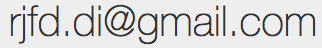

| Senior Software Engineer | @ SUSE LINUX |
| Associate Researcher | @ NOVA LINCS |
Research areas: concurrent and distributed systems, consistency, transactional memory, distributed transactions, program static analysis.
Contact: 
Ricardo Dias received his doctoral degree from the Universidade
Nova de Lisboa, Portugal, in 2013, under the supervision of Prof.
João Lourenço,
on the topic of transactional memory.
He spent a couple of years as a postdoc researcher, working with
Prof. Rodrigo Rodrigues
on the topic of geo-replicated storage systems, first at the
NOVA LINCS laboratory,
and then at the GSD group
of the INESC-ID laboratory.
He his currently working as a senior software enginner, at
SUSE Linux, in the Entreprise
Storage Team, where his main task is to contribute to the upstream
Ceph storage system project.
He is also an Associate Researcher at the
NOVA LINCS laboratory,
where he still colaborates in several research projects, and
co-supervises Tiago Vale's
PhD studies with Prof.
João Lourenço.
In 2010, he spent three months as a visiting PhD student at the theory
group in the Queen Mary, University of London, hosted by professor
Dino Distefano. He has received a Distinguished Paper Award in
Euro-Par 2012 and the Best paper Award at HVC 2012.